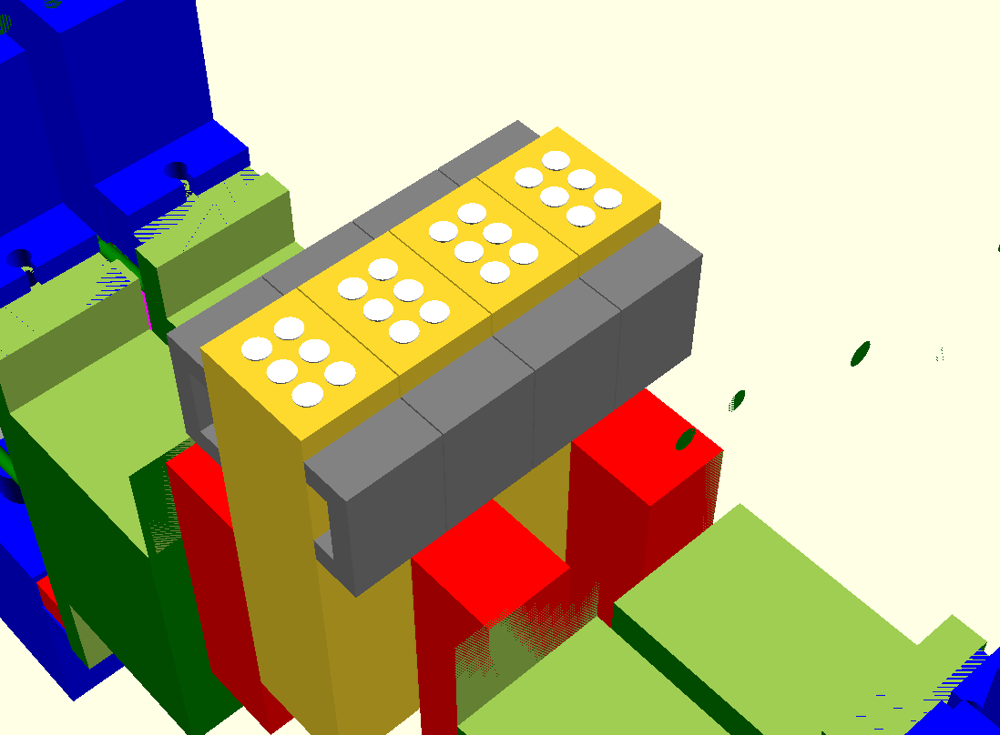
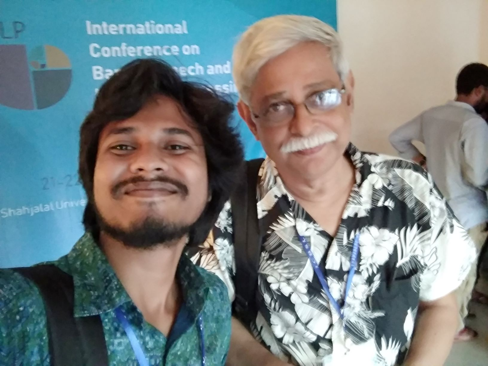

|
Braille displays are costly and a large number of visually impaired people aren't capable to read regularly due to lack of braille embossed book or a digital display. After our single-cell device, we worked to make a cost-effective multicell book reader for the visually impaired students in Bangladesh. The challenge In a tiny space we have to actuate six dots and one cell shouldn't occupy many spaces because multiple cells need to put side by side. The challenge is we have to come up with ideas to develop an affordable multicell display while maintaining standard braille cell size with the available hardware. Furthermore, we have to package this display like a book reader with the necessary additional electronic components. |
 |
||||
| Innovative solution: We have tried many experiments and after three years of working and a lot of prototypes, we finally came up with a modular design and prototyped four modules. Putting these modules side by side allows making a multicell braille display. This video demonstrates a visually impaired reading a piece of text using the four-cell display. | |||||
The Team Noushad Sojib Supervisor: Dr. M. Zafar Iqbal |
 |
||||